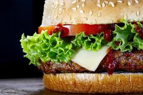

Insanity Burger
Insanity burger
Ingredients
- 800 g minced chuck steak
- olive oil
- 1 large red onion
- 1 splash of white wine vinegar
- 2 large gherkins
- 4 sesame-topped brioche burger buns
- 4-8 rashers of smoked streaky bacon
- 4 teaspoons American mustard
- Tabasco Chipotle sauce
- 4 thin slices of Red Leicester cheese
- 4 teaspoons tomato ketchup
Instructions
- For the best burger, go to your butcher’s and ask them to mince 800g of chuck steak for you.
- This cut has a really good balance of fat and flavoursome meat.
- Divide it into 4 and, with wet hands, roll each piece into a ball, then press into flat patties roughly 12cm wide and about 2cm wider than your buns.
- Place on an oiled plate and chill in the fridge.
- Next, finely slice the red onion, then dress in a bowl with the vinegar and a pinch of sea salt.
- Slice the gherkins and halve the buns.